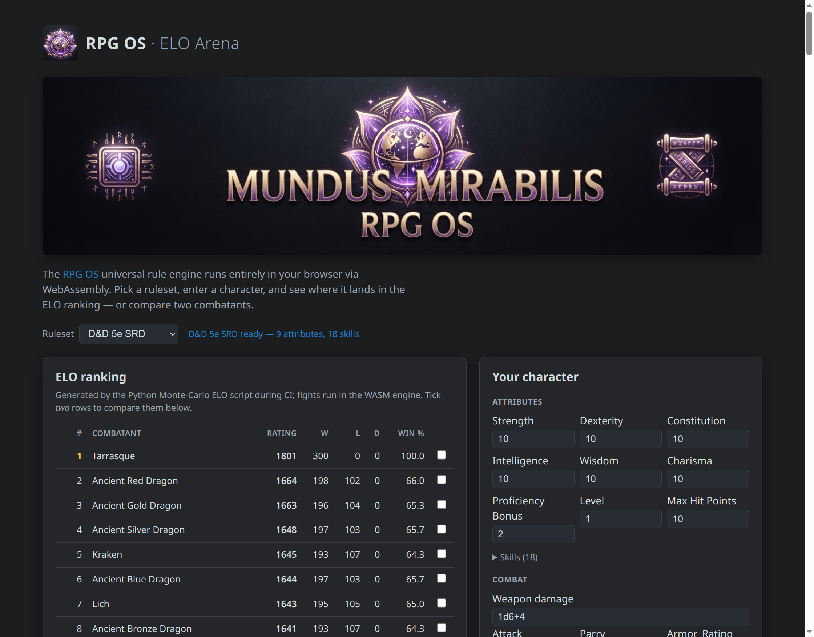

|
RPG OS
A universal, header-only C++23 rule engine for tabletop role-playing games
|
|
RPG OS
A universal, header-only C++23 rule engine for tabletop role-playing games
|
The part of a tabletop RPG that survives when you take the fantasy away.
RPG OS is a universal, header-only C++23 rule engine for tabletop role-playing games. Take any system — D&D, The Dark Eye, Basic Roleplaying, or one you invented yourself — and strip away the flavour. What remains is the same mechanical skeleton every time: characters have attributes and skills, dice are rolled against thresholds, armour absorbs damage, fights are decided by repeated checks, and characters grow. That skeleton is pure bookkeeping, and it is exactly what RPG OS implements — the boring parts that support the fantasy, so you can spend your energy on the wonderful world instead (mundus mirabilis — a wonderful world).
RPG OS is universal: it does not know — or care — which rule system you play. Rules live in plain JSON files, and the engine reads any of them at runtime. It ships with three complete systems as working examples — D&D 5th Edition (SRD), The Dark Eye 5th Edition, and Basic Roleplaying — but adding a fourth is writing one JSON file, never touching the engine.

See the engine at work with zero setup. The ELO Arena is a live demo that runs RPG OS in your browser via WebAssembly:

RPG OS models the mechanical layer a game master or a digital tool needs:
None of this is hard-coded. Every mechanic above is described by the ruleset JSON — the engine is a generic interpreter.
Both modes share one template-based core, so a check resolved in one mode is byte-identical in the other (a parity test enforces this).
Load any ruleset JSON at runtime and resolve rules generically. No recompilation: a new game system is just a new JSON file.
codegen/rpg_os_codegen.py compiles a ruleset's schema into a strongly typed header with named members and methods (courage(), baseAttack(), climbCheck(), …). Formulas compile to C++, checks use constexpr configs, and attributes are stored in the narrowest fitting type — no dynamic allocation in the hot path. The character data still comes from the ruleset JSON at runtime.
When to use which? Start with universal mode — it is one header, works with any ruleset, and is ideal for tools, editors, web builds and quick prototyping. Reach for specific mode when you want compile-time names and maximum speed on a known ruleset.
The universal engine is compiled to WebAssembly and published as @mundus-mirabilis/rpg-os — usable in Node.js and the browser, with any ruleset JSON:
The full documentation is generated with Doxygen and published on GitHub Pages for every branch and release. It is split into two clearly separated paths:
| URL | Content |
|---|---|
| https://mundus-mirabilis.github.io/RPG-OS/develop/ | Current development |
| https://mundus-mirabilis.github.io/RPG-OS/main/ | Latest release |
| https://mundus-mirabilis.github.io/RPG-OS/main/demo/ | ELO Arena (live demo) |
RPG OS is developed openly: releases are tagged vX.Y.Z, and the latest release is always on the **main** branch. Development happens on **develop** — the current state of the project, one step ahead of the latest release. The docs and the ELO Arena are built for every release and for every push to main and develop, so each version has its own live documentation and ELO ranking:
| Version | Documentation | ELO Arena |
|---|---|---|
Latest release (main) | docs | ELO Arena |
Current development (develop) | docs | ELO Arena |
RPG OS is header-only: add include/ and generated/ to your include path and link nothing. With CMake, consume the rpg_os::rpg_os interface target:
Useful CMake options:
| Option | Default | Effect |
|---|---|---|
RPG_OS_BUILD_TESTS | ON | Build the test suite |
RPG_OS_WARNINGS_AS_ERRORS | OFF | Treat compiler warnings as errors |
RPG_OS_ENABLE_SANITIZERS | OFF | Build with AddressSanitizer + UBSan |
RPG_OS_RUN_CODEGEN | OFF | Regenerate generated/*.hpp during the build |
RPG_OS_BUILD_DOCS | ON | Render the Doxygen documentation into html/ (gitignored) |
Requires CMake ≥ 3.24 and a C++23-capable toolchain whose standard library provides <expected>: GCC ≥ 13 (libstdc++ ≥ 13), or Clang ≥ 17 with libc++ ≥ 17 (Apple clang on macOS, or -stdlib=libc++ on Linux). Clang 17/18 with GNU libstdc++ 13 does not provide <expected> — use Clang ≥ 19 with libstdc++ instead.
The example programs are small, self-contained demos of both modes, the combat simulator and the ECS patterns — see the examples.
The engine code in this repository is Apache-2.0. The ruleset JSON files are NOT: each is governed by the licence stated in its own required licence field (e.g. CC-BY-4.0, or the Open RPG Creative License). Never assume a ruleset's content is Apache-2.0 — check the licence field of the individual file (and its optional licence_source link) before redistributing or modifying it. The ELO Arena shows the loaded ruleset's licence at runtime.
| Ruleset | Licence | Licence stated at |
|---|---|---|
dnd5e_srd.json | CC-BY-4.0 | dndbeyond.com/srd |
tde5e_core.json | Open RPG Creative License (ORC) | ulisses-spiele.de — ORC |
brp_ugc.json | Open RPG Creative License (ORC) | chaosium.com/orc-license |
Each ruleset is a single JSON file validated against rulesets/ruleset.schema.json. The User Guide explains the ruleset format and how to create your own.
The detailed layout and every internal convention live in the Developer Guide.
scripts/elo_ranking.py ranks every combatant of a ruleset with a Monte-Carlo ELO tournament: a Swiss pairing (each combatant plays one similar-rated opponent per round, so it needs O(rounds · n) fights instead of O(n²)), executed in parallel processes. Each fight is a full runFight simulation in the native engine. Every random consumer follows the same rule — explicitly seeded = exactly reproducible, unseeded = varied on every run:
The leaderboard on the ELO Arena page is generated by this script during CI; the page itself only ports the small ELO formula to JavaScript so it can rank your entered character live, in the browser, without a server.